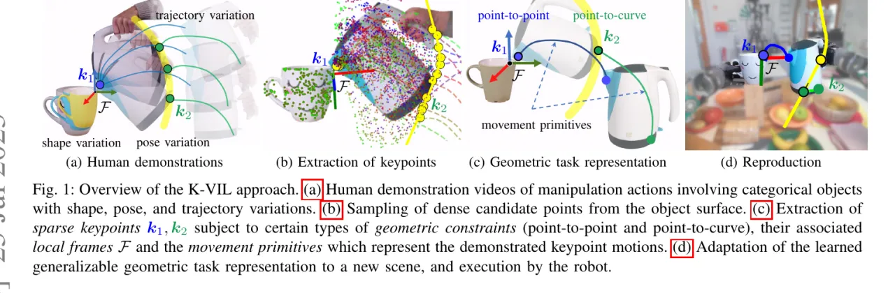
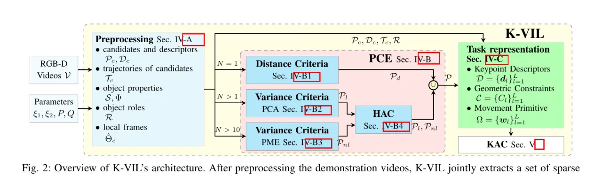
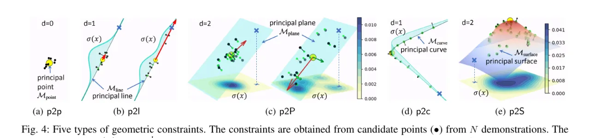
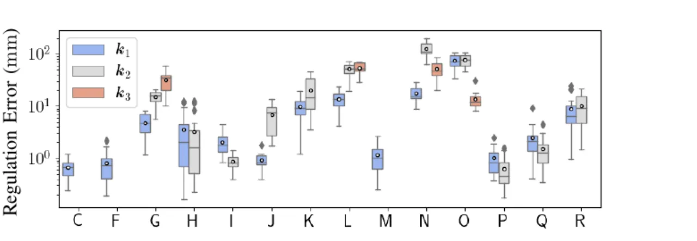

K-VIL 直接从 RGB-D 演示视频中联合学习几何任务约束与控制策略：它自动提取一组 sparse、object-centric、embodiment-independent 的关键点及其几何约束，配上 local frames 与 movement primitives，构成可泛化的任务表示；再由一个新颖的 keypoint-based admittance controller (KAC) 在杂乱新场景中复现技能。方法支持 one-shot 学习，并能在新演示到来时增量更新。
视觉模仿学习（visual imitation learning）能让机器人直观、高效地获得新的操作技能。但作者指出核心难点在于："simultaneously learning geometric task constraints and control policies from visual inputs alone remains a challenging problem" —— 仅凭视觉输入同时学出几何任务约束与控制策略，仍是未解问题。
作者用一个直觉例子贯穿全文：看几段"从水壶往不同茶杯里倒水"的视频，人就能同时理解"什么是倒水（what）"和"如何倒（how）"。从计算角度看，水壶的壶嘴和壶底可用两个关键点 k₁、k₂ 表示：倒水任务 = 把壶嘴 k₁ 对齐到杯口上方一点（point-to-point 约束）+ 把壶底 k₂ 对齐到一条控制倾角的曲线（point-to-curve 约束）。这样一组"关键点 + 几何约束"就能参数化日常操作任务。
本文提出以关键点几何约束刻画任务，从视频演示中教机器人操作技能，并要求技能可泛化、可在全新场景复用。为此需解决三大挑战：(i) 任务相关关键点的检测与高效提取；(ii) 可泛化、与本体无关的任务表示；(iii) 演示任务的复现及其对新场景的自适应。

给定 N 段 RGB-D 演示视频，K-VIL 先做预处理生成学习所需数据，再由 Principal Constraints Estimation (PCE) 联合抽取稀疏关键点及其几何约束，最后组装成完整任务表示交给 KAC 执行。整条流水线如下图。

用 Mask R-CNN 得到物体掩膜，在每个物体可见区域稠密均匀采样 candidate points（实验中每个 slave 物体采 P=300 个点，手部采 21 个）；每个点既是潜在关键点也是潜在 local frame 原点。再借助 Dense Object Net (DON) 的 correspondence function 追踪这些点在视频中的运动、恢复 3D 轨迹并得到深度视觉描述子。通过物体运动显著性判定 role：轨迹方差最小者为 master，其余为 slave —— K-VIL 只在 master 上建 local frames、只在 slave 上取关键点。local frame 由其 Q 个最近邻 candidate（实验中 Q=50，手部 10）的参考位置定义，靠最小化邻域点位移的均方误差在新实例上重新检测。
约束用低维流形刻画。K-VIL 借助 Principal Manifold Estimation (PME)，把随时间变化的一组 3D 点作为低维嵌入求解：PME 最小化 reconstruction error + 曲率正则项 λ‖κ_f‖²；当 λ→∞ 时退化为线性 PCA。流形的线性与内在维度 d 决定约束类型，共五种基础约束：

PCE 据此抽约束：one-shot（N=1）用启发式 distance-based criteria（因单演示不足以学出泛化技能，视为特例）；few-shot（N>1）则用演示间的变化性（variance criteria）来判定关键点与约束，并用 Hierarchical Agglomerative Clustering (HAC) 去除冗余的关键点选择，得到最终稀疏集合 𝓟。
关键点运动相对其 local frame 编码为 Via-point Movement Primitives (VMP)：VMP 结合线性基础轨迹与非线性 shape modulation，权重服从高斯分布、可 MLE 学习；相较 ProMP，它对超出演示分布的 via-points 有更强外推能力，兼顾灵活时间缩放与运动风格保持（实验用 20 个 kernel）。执行时，新颖的 KAC 把每条约束转成 attraction force 与 density force 的合力，并引入优先级 (priority) 机制处理一组带优先级的几何约束——这正是它能在单演示、大形状变化下仍可靠外推的关键。
在真实机器人上验证 6 个日常任务：press button (PB)、fetch tissue (FT)、insert sticks (IS)、pour water (PW)、hang hat (HH)、clean table (CT)，涉及不同约束类型与多种类别物体。DON 以自监督、任务无关方式训练，手部用 MediaPipe 检测 21 个关键点、当作特殊物体。KAC 在 18 个任务上评测，每个任务复现 N_r=20 次，报告 control accuracy (Acc.)、control precision (Prec.) 与 success rate (R)。
作者强调物体位姿 / 形状的变化对学出可泛化表示至关重要。对 PB、FT，从少于 4 段演示学出的约束对机器人不可达，导致 0% 成功率；"the task representations learned from 4 demonstrations are generalizable ... KAC reaches sub-millimeter control accuracy and precision, as well as ≥ 90% success rates"。抽出的约束多与人类直觉吻合：按按钮为单个 p2p、插入为 p2p+p2l、倒水为 p2p+p2c。

| 任务 (演示数) | 约束 (TR) | Acc. k₁ (mm) | Acc. k₂ (mm) | R (%) |
|---|---|---|---|---|
| C · PB (4) | p2p | 0.67 | – | 90 |
| F · FT (4) | p2p | 0.82 | – | 100 |
| A/B · PB (1/3) | 3×p2p / p2p,p2l | 失败 | 失败 | 0 |
| G · PW (1) | 3×p2p | 4.81 | 15.01 | 95 |
| I · PW (4) | p2p, p2P | 2.01 | 0.88 | 94 |
| J · PW (11) | p2p, p2c | 0.93 | 6.80 | 100 |
| L · HH (1) | 3×p2p | 13.53 | — | 95 |
| M · HH (3) | p2p | 1.48 | – | 95 |
| N · IS (1) | 3×p2p | 17.77 | — | 62 |
| P · IS (3) | p2p, p2l | 1.01 | 0.63 | 95 |
"–" 表示该关键点不需要；"—/失败" 表示因执行失败无数据或为不参与比较的灰值。数字逐字摘自论文表 VIII。
去掉 KAC 的优先级机制（记 np）后：单演示插入任务 IS₁ 62% → ISnp,1 25%，因为三个相同的虚拟弹簧-阻尼系统达平衡、k₃ 反而以牺牲 k₁/k₂ 为代价取得最高精度。对已可泛化的任务（PW₁₁、IS₃），去优先级不影响成功率，但控制精度与重复性下降。作者同时说明："thanks to the priority introduced in KAC, HH₁ and IS₁ achieve 95% and 62% success rate, respectively, despite the single available demonstration." IS₁ 偏低是因为复现时用了极长的 stick，需要很强的泛化——k₂ 最大误差约 150 mm，恰好对应演示与复现所用 stick 的最大长度差。
K-VIL 假设关键点位于物体表面，且要求所有关键点在演示中均可见（无遮挡）；这排除了透明、反光、薄物体，"hinders K-VIL from being used in many real-world tasks"。作者建议未来将 dense correspondence 与场景表示模型 (如 NeRF-supervision) 或点生成模型结合以处理 (self-)occlusion。
K-VIL 的关键点对应运动的 sub-symbolic 参数，"do not necessarily have a clear semantic interpretation"。弥合符号与亚符号表示之间的鸿沟仍是 (visual) IL 的重要挑战；作者提出未来可结合 affordance / 空间关系 / 抓取点提取方法把关键点与符号任务表示关联。
本文只考虑可由五类基础几何约束、在单层 master-slave 关系下建模的 uni-manual 操作任务。未来计划扩展到更多约束类型、双臂协调（bimanual，含 master-slave 层级）、以及搅拌 / 擦拭等周期运动与关节物体 (articulated objects)。
物体位姿 / 形状的变化对学出可泛化表示至关重要，尤其在演示很少时。缺乏此类变化时，K-VIL 仍能凭 dense visual descriptors 泛化到同类物体，但"achieve lower control accuracy, precision, and success rate, and may fail in some extreme cases, e.g., in the one-shot VIL setup"。